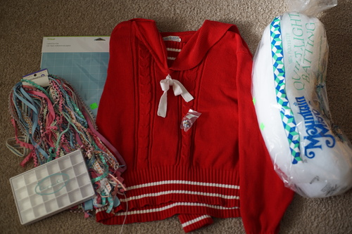
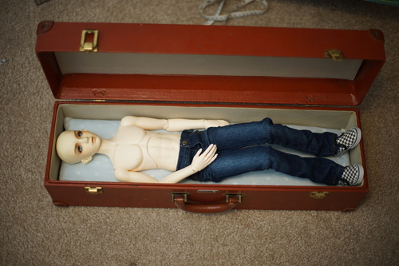
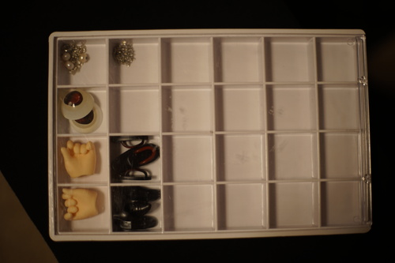

hot take coming: anyone who listens to Everything I Own by Bread and decides it's a break up song is a f*kin idiot. whatever exec decided to have nysnc cover this song and add a dumb new spoken verse is also a f*ckin idiot. i am so mad and not for any good reason. anyway thanks for coming to my ted talk where i bash a 20 some year old cover.
i got my precious things page up and added a bunch of precious things! please check it out! it may not be obvious, but the flower is a back button. ryan asked why there were no dolls on that page and im undecided if i should add them. they are all incredibly precious things to me but i mean they all have their own page!
went to the thrift store yesterday and bought some junk
i dont know why this exists but i needed it
idfk im giving it to my mom
i tried to buy these like a month ago and they fell out of my basket and got lost
hopefully they wont look too tacky on whatever doll dress i put them on
i regret not buying the other one there for my earrings
ive been thinking about making some doll pillows for hina's box so i was happy to find some batting! and I actually did it within 12 hours of buying it. extreme crafting over here!!!

i decided to use some minky star embossed fabric i've had for like 10 years to cover the pillows but I only had enough for 2 panels out of 4. I asked ryan if i should make one in minky fabric and one in cotton OR half and half both pillows. he said to half and half so i did that!
poor liam doesnt even fit in the box with the pillows in and his knees bent. sorry dude. i dont even know where ill put him when hina arrives. maybe ill have brough verona and their shared box back by then
i bought this little bead container to put my doll eyes in but it turns out i only have one spare pair of eyes here. theres a ton at my mom's house though. i have so many eyes... i put some other junk in there in the meantime
it looks like my very hopeful hopes of gettin hina this year aren't going to happen! volks posted an update for their shipments and mine probably wont arrive in the US until a month after they ship out the international orders. she'll probably arrive in Jan or Feb. the price difference between volks usa and volks int was like $100 though because of the awful express shipping options and honestly i will take waiting 6 weeks for $100 in savings
with all that said, slap me if i decide to order a doll that takes longer than the paypal proctection period to arrive. i trust volks not to go under but ugh i hate that they get to hold my money for 6+ months while preparing. its a terrible business model
(thankfully) volks news 93 has nothing too exciting. the new single piece MDD torso is cute but i sure don't need one. y'shtala is cute too but i also dont need her.i wonder when they'll start talking about the frozen girls again. i dont want one but theyve been teasing them forever! no user group has shown up for the DD lottery so maybe i will end up waiting until the 24th to find out. thats okay its something to look forward to!